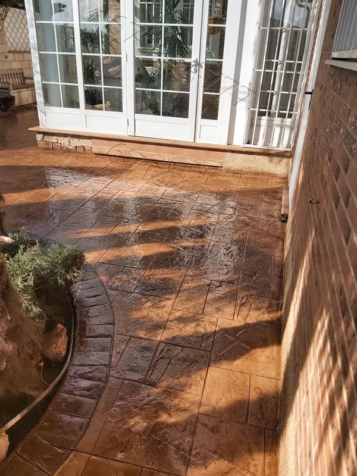
Instalamos pavimentos de hormigón decorativo con HA-200, mallazo electrosoldado y doble sellado de resina. Adaptado al clima extremo de Toledo: calor de verano y heladas de invierno. Presupuesto por escrito en 24 horas.
Zona de actuación: Toledo · Illescas · Seseña · Torrijos · Talavera de la Reina · Argés · Cobisa · Burguillos de Toledo · Chozas de Canales · Portillo de Toledo · Val de Santo Domingo · Magán · Yuncler · Carranque · Nambroca · La Sagra · Área Metropolitana
Desde pavimentos de acceso en adosados de La Sagra hasta grandes superficies en naves industriales de Talavera. Cada obra se ejecuta con los mismos estándares de calidad.
El hormigón impreso o estampado es la opción más demandada en viviendas unifamiliares, comunidades de vecinos y accesos en toda la provincia de Toledo. Combina la resistencia estructural del hormigón con una estética que imita piedra natural, adoquín, pizarra o madera.
En nuestra Opción A utilizamos hormigón HA-200/P20/IIa —clase de exposición IIa para ambientes exteriores con ciclos de hielo y deshielo, habituales en el invierno toledano— con un espesor de 10 cm sobre base de zahorra compactada. La adición de fibra de polipropileno (250 g/m³) reduce la retracción plástica y minimiza la aparición de microfisuras, especialmente críticas en los meses de julio y agosto cuando las temperaturas superficiales del pavimento superan los 60ºC en Toledo.
⚠️ Advertencia sobre sales de deshielo
El uso de sal común (cloruro sódico) o productos fundentes sobre hormigón impreso sellado provoca un efecto osmótico que degrada el sellador en 1-2 temporadas. Recomendamos arena o gravilla fina como alternativa segura durante las heladas.
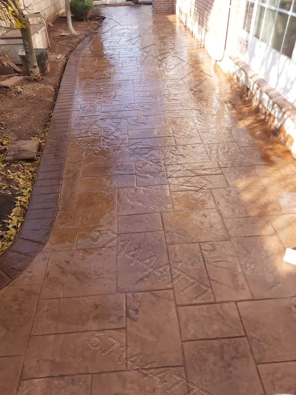
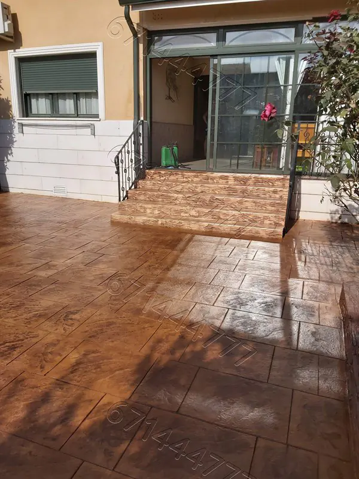
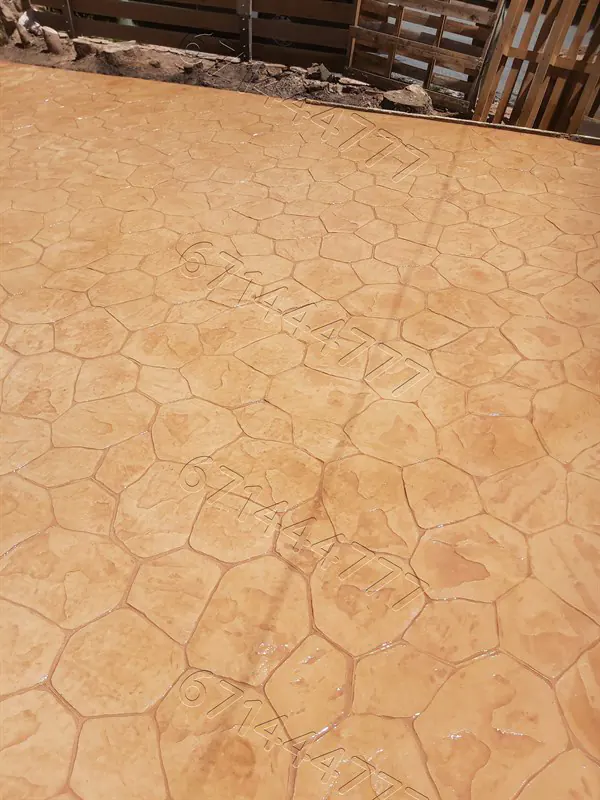
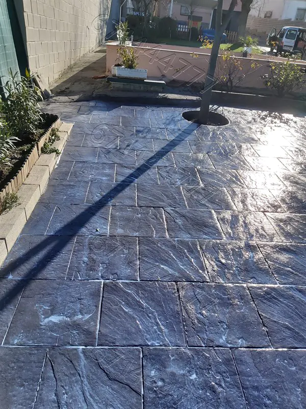
El hormigón pulido o microcemento pulido es la tendencia dominante en reformas de viviendas y locales comerciales en Toledo capital y en los nuevos desarrollos residenciales de Illescas y Seseña Nuevo. Su acabado satinado o brillante aporta amplitud visual y es extremadamente higiénico y fácil de mantener.
Utilizamos el proceso de diamantado progresivo (granos 30 → 400 → 800 → 1500) con pulidoras planetarias de doble cabezal. La impregnación con silicato de litio densifica la superficie y aumenta la resistencia a abrasión hasta valores superiores a los 6 kN/m² en la escala MOHS adaptada.
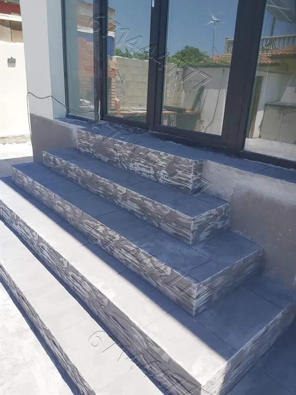
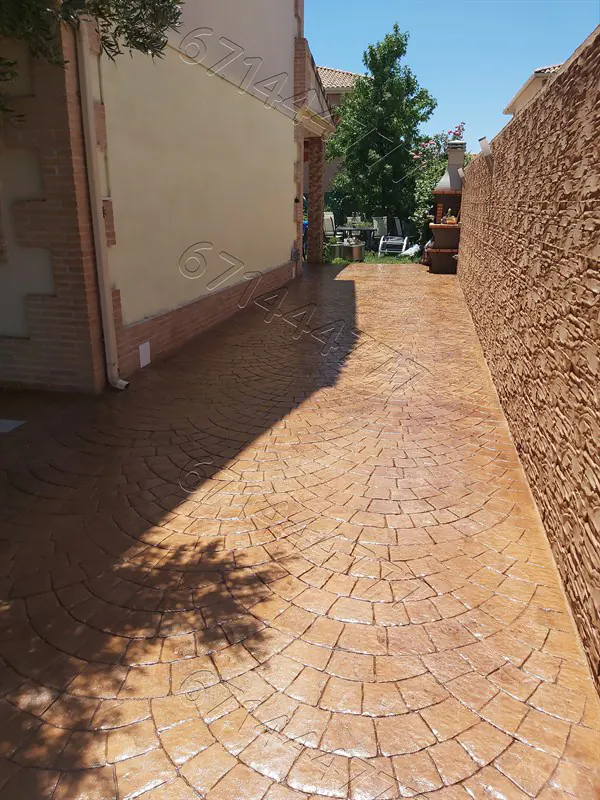
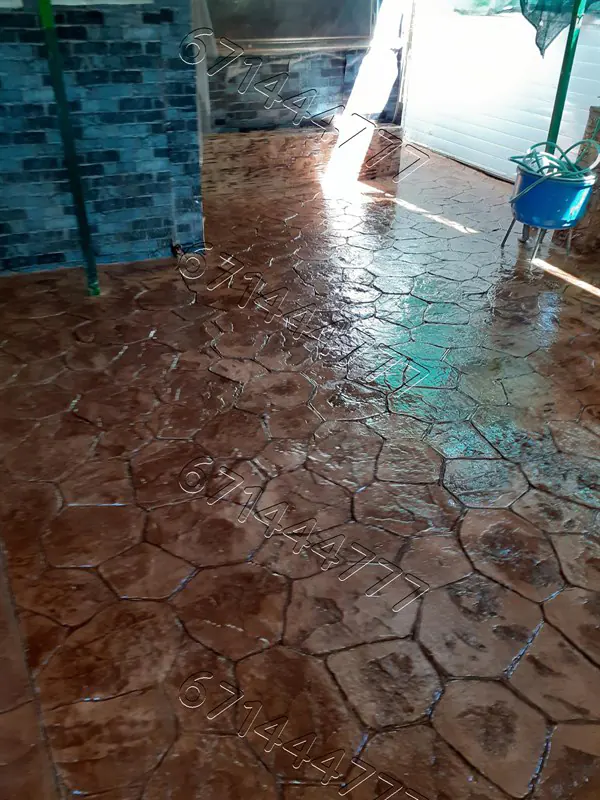
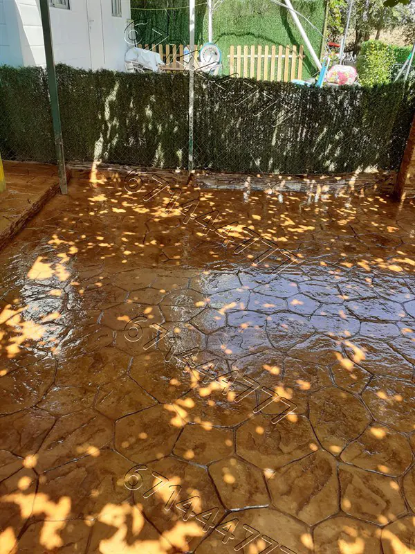
El hormigón impreso vertical transforma cualquier muro, valla, fachada o pared de jardín en un elemento decorativo de alto impacto. En Toledo y su área metropolitana, su uso más habitual es en cerramiento de fincas, muros de piscinas, fachadas de naves y vallas de parcelas.
Se aplica mediante mortero especial de fraguado rápido proyectado sobre malla metálica anclada al soporte, texturizado con matrices de poliuretano que imitan piedra caliza de Toledo, ladrillo visto, piedra de mampostería o madera envejecida. El acabado se protege con sellador de base solvente de alta permeabilidad al vapor de agua (transpirable).
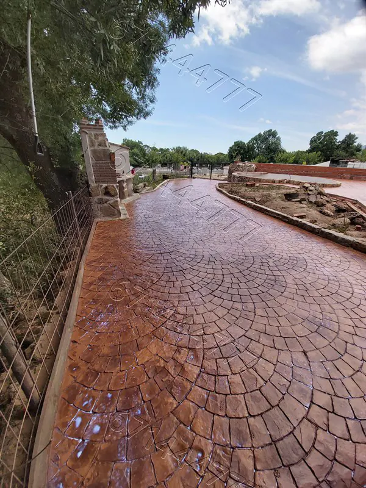
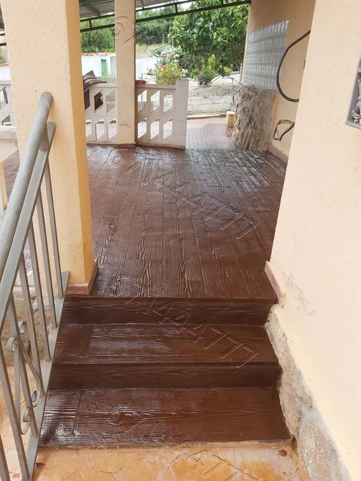
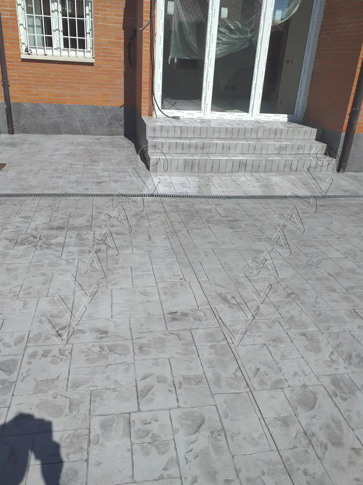
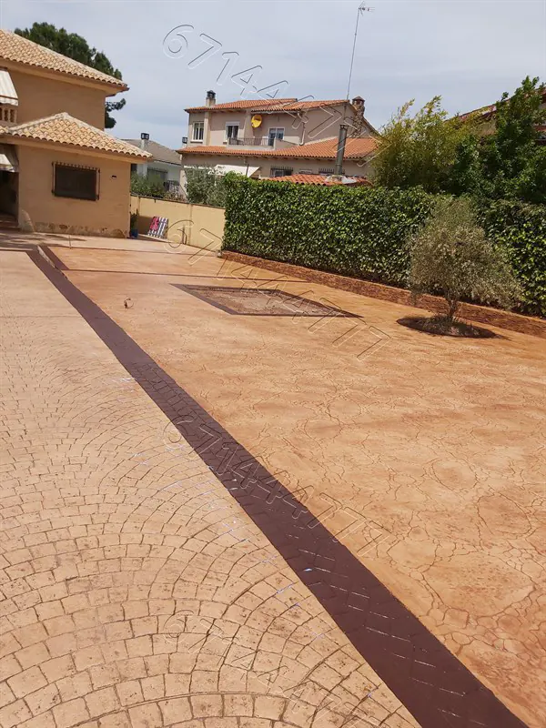
Somos la única empresa en Toledo que publica abiertamente la diferencia entre calidades para que puedas decidir con toda la información.
Obra con Garantía Escrita
| Hormigón | HA-200/P20/IIa |
| Espesor | 10 cm mínimo |
| Armado | Mallazo 5×20×20 mm |
| Fibra polipropileno | 250 g/m³ |
| Sellado | Doble sellado resina solvente |
| Garantía | ✅ Por escrito |
| Curado en verano | Membrana de curado incluida |
Obra sin Garantía
| Hormigón | HM-200 (masa) |
| Espesor | 6 cm mínimo |
| Armado | Mallazo 4×20×30 mm |
| Fibra polipropileno | 200 g/m³ |
| Sellado | Sellado simple base agua |
| Garantía | ❌ Sin garantía |
| Curado en verano | Riego manual estándar |
Precios reales de 2026 basados en obras ejecutadas en Toledo y provincia. Sin sorpresas, sin letra pequeña.
1 ¿Qué tipo de trabajo necesitas?
2 Nivel de calidad
HA-200 · 10cm · Mallazo 5×20×20 · Fibra 250g · Doble sellado resina
HM-200 · 6cm · Mallazo 4×20×30 · Fibra 200g · Sellado base agua
3 Superficie aproximada: 40 m²
Estimación orientativa para tu obra
Precio IVA no incluido · Excluye preparación previa y gestión de escombros
* Estimación orientativa basada en precios medios de obras ejecutadas en Toledo en 2026. El precio definitivo puede variar según accesibilidad, complejidad del patrón y preparación del terreno.
Galería de obras ejecutadas en municipios de Toledo, La Sagra y Área Metropolitana.
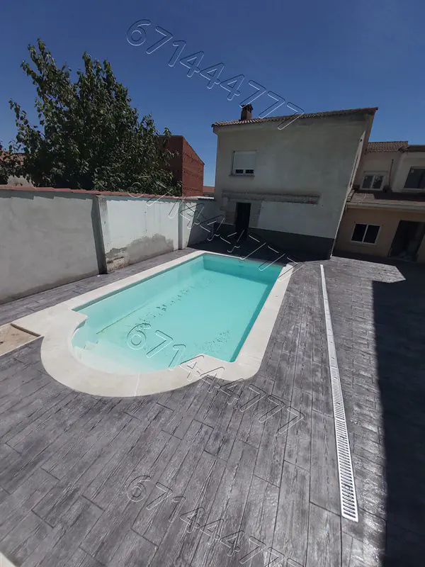
Cobisa
Acceso y jardín · 65 m²
Chozas de Canales
Patio trasero · 48 m²
Portillo de Toledo
Terraza piscina · 120 m²
Val de Santo Domingo
Suelo garaje · 35 m²
Burguillos de Toledo
Acceso finca · 90 m²
Argés
Patio adosado · 28 m²
Seseña
Comunidad de vecinos · 200 m²
Illescas
Parcela nueva · 150 m²
Carranque
Zona parking · 80 m²
Magán
Ampliación jardín · 55 m²
Yuncler
Acceso y parking · 70 m²
Toledo Capital
Vivienda unifamiliar · 95 m²
Toledo tiene uno de los climas continentales más extremos de la Península Ibérica. En verano, las temperaturas del pavimento expuesto al sol pueden superar los 65ºC, lo que provoca una evaporación rapidísima del agua de amasado que genera tensiones internas y microfisuras si el curado no es correcto. En invierno, los termómetros pueden bajar de -10ºC en Portillo de Toledo, Chozas o Val de Santo Domingo, causando la expansión del agua congelada en los poros del hormigón.
Nuestra protocolización de obra incluye: curado activo con membranas de polietileno en obras de verano (temperatura del hormigón fresco controlada entre 10ºC y 30ºC), aditivos retardadores de fraguado en días de calor extremo, y suspensión de trabajos cuando la temperatura prevista baje de 5ºC en las 24h siguientes al vertido, garantizando la integridad del HA-200 durante los 28 días de curado completo.
Temp. sup. pavimento en julio
Heladas en invierno (comarca)
Hormigonados preferentemente en las primeras horas de la mañana. Aplicación de retardador de evaporación en la superficie fresca (Evaporation Retarder). Curado con membranas de polietileno o compuesto líquido de curado durante mínimo 7 días.
Suspensión de obra con temperatura ambiente inferior a 5ºC. Control de temperatura del agua de amasado (máx. 60ºC). Protección del hormigón fresco con mantas térmicas cuando se prevean heladas nocturnas.
El cloruro sódico (sal de carretera o sal doméstica) actúa como agente osmótico que penetra el sellador e inicia ciclos de cristalización que degradan la capa superficial. Alternativa segura: arena de sílice o gravilla fina de cuarzo.
¿Tu municipio no aparece? Llámanos: atendemos obras en toda la provincia de Toledo y provincias limítrofes (Madrid, Ciudad Real).
Solicita tu presupuesto gratuito ahora. Sin compromiso. Respuesta en menos de 24 horas con medición y precio definitivo por escrito.